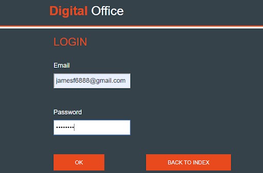

About Me
Hello! My full name is Jaime Armando Bastida Prado
I'm a big enthusiast of computer science, keen on mathematics and music as well as ancient history,
ready to put on practice my knowledge and skills.
Currently studying at Escuela Superior de Cómputo (CDMX) with a GPA of 8.8/10. I'm willing to achieve my Bachelor's degree by 2021.
Here you will find some of the projects I've done of the subjects taken at my University.
Also there is a link to each one of them leading to Github where you can check how it works (code), documentation and results.
"The mind is not a vessel to be filled but a fire to be kindled"
-Plutarch

Utilizing a Raspberry Pi3 B+ to take pictures in real time (making use of a Raspberry Pi Camera v2),
process the image with the Sobel operator for edge detection and sending them to a client computer.
This is an implementation of the famous Game of Life cellular automaton in C++ with several simulation
options using the olcConsoleGameEngine.
This is a project done for the Distributed Systems Programming taken at ESCOM - IPN.
The purpose of this project was to learn how to design and implement a Distributed System in C++ language,
coding an entire Object Oriented library from raw sockets up to a web page where the final user could see the results.
This is a project done for the subject Web Technologies taken at ESCOM - IPN.
The purpose of this project was to learn how to build a fully responsive non static
web site to provide a postcard mailing service.

This is a project done for the subject Cryptography taken at ESCOM - IPN.
The purpose of this project was to learn how to build a web site to provide
a service with cryptographic features.
This is an implementation in C++ language, using the olcConsoleGameEngine with several
simulation options of Langton's Ant two-dimensional universal Turing machine, invented
by Chris Langton in 1986.